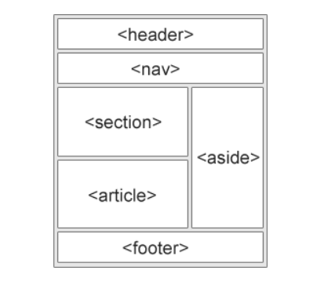
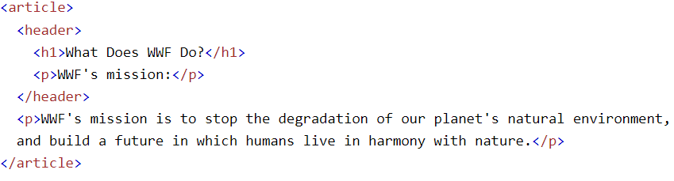
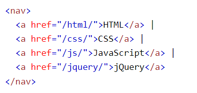
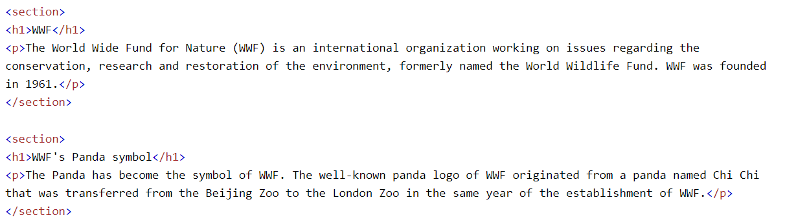
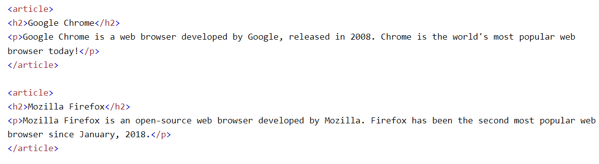
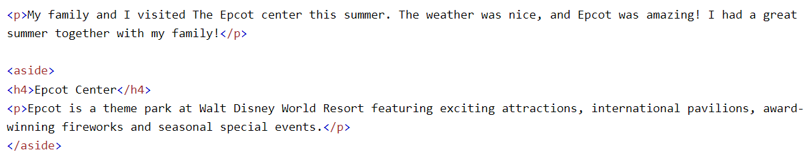
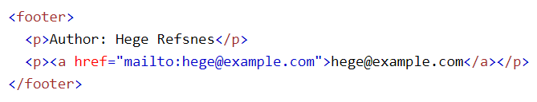

Semantic Elemanlar HTML
Semantik Elemanlar Nedir?
Semantic etiketler, HTML'de belirli bir anlamı veya anlam dizisini ifade eden özel etiketlerdir. Bu etiketler, sayfanın yapısını ve içeriğini daha anlaşılır hale getirir, arama motorlarına daha iyi bir anlayış sağlar ve erişilebilirliği artırır.
Semantik Eleman Çeşitleri
- header: Bir belgenin veya bölümün başlığını temsil eder. 
- nav: Belgenin gezinme bağlantılarını içerir. 
- section: Belgenin bölümlerini veya alt bölümlerini temsil eder. 
- article: Bağımsız bir belge, makale, blog gönderisi veya yorum gibi içeriği temsil eder. 
- aside: İçeriğin yanında, genellikle bir kenar çubuğunda veya kutuda yer alan destekleyici veya ilgili içeriği temsil eder. 
- footer: Belgenin veya bölümün alt bilgisi veya sonunu temsil eder. 
- main: Bir belgenin veya bölümün ana içeriğini temsil eder.